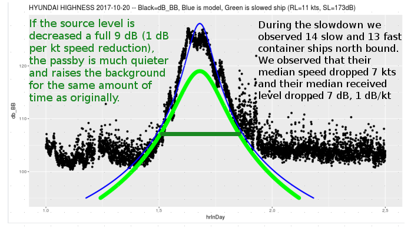

13% of ships account for 1/2 of fleet's radiated power
PeerJ 2018 in rev. Veirs, Veirs, Williams, Jasny, & Wood
Fast-moving boats and ships have similar source and received levels
But, not for very long, compared to ships
Segue: does quiet time matter to SRKWs?
Right whale stress response to 9/11 ship noise reduction?
Not all the time: e.g. bow-riding ship wakes? and they choose to enter Salish Sea when outer coast is quieter...
Insights from research on humans?
results;
2017 SRKW behavorial study during slow-down trial
Collaboration with Oceans Initiative
If we are only studying vessel noise, and not funding behavioral response, then conduct slow-down trials when SRKWs are not present (i.e. winter, not summer)
Thanks to private, philanthropic "rapid response" funders: Christina Koons, Jim McIntire, Stephanie Solien, Frank Greer, & Glen and Deb Bruels.
Summarize sample size (mini-table); to help fund analysis Oceans Initiative table (at Sonic Sea screening)
Photo of theodolite team (with names?)
2017 vessel behavior and noise study
Collaboration with NEMES/UVic
Photo of camera/bluff/AIS antenna; map of FOV, nearby ports, and shipping lanes; summarize data (# of images; days of continuous recordings; ais records)
Case study: SRKWs southbound 8-10:30 a.m., Sep 27, 2017
Three slides?
Time lapse
Time series of RL w/CPA curves and peak detection
Subsets of time series with vessel images overlying noise spikes/peaks?
Small, speedy boats make lots of noise
But, not for very long, compared to ships
results;
NEMES camera: source levels of passing boats
This video shows successive NEMES images with computed range, bearing and speed
12 hours of ships and boats
Notice that 5 ships close together are not 5 times louder than one ship!
They do take longer to pass by.
10 Weeks of Haro Strait Noise Statistics
These curves are the percentage of time the noise levels are less than the x-axis values.
They were calculated from 10 weeks of underwater recordings 8/16/2017 - 11/1/2017
A 3dB Volume Demonstration
A Noisy Ship
3dB Quieter
Alternating
Modeling the passby of a container ship
Slow the modeled ship from 20 to 11 kts
Decrease the source level by 3 dB
Reduce source level by 6 more dB

>
Statistical model of ships and boats
Comparison between model and the real world
<
Need orca communication graphics here
Slowdown model of communication space
Convoy model of communication space
Whale watcher model of communication space
Future work & acknowledgements
Thank you!
Co-authors: Lauren, Patrick, and Gregory
Backers of the 2017 Orcasound Kickstarter
Funders of the 2017 field study: Christina Koons, Jim McIntire, Stephanie Solien, Frank Greer, & Glen and Deb Bruels.


 Veirs, Veirs, & Wood (2016, PeerJ)
Veirs, Veirs, & Wood (2016, PeerJ)